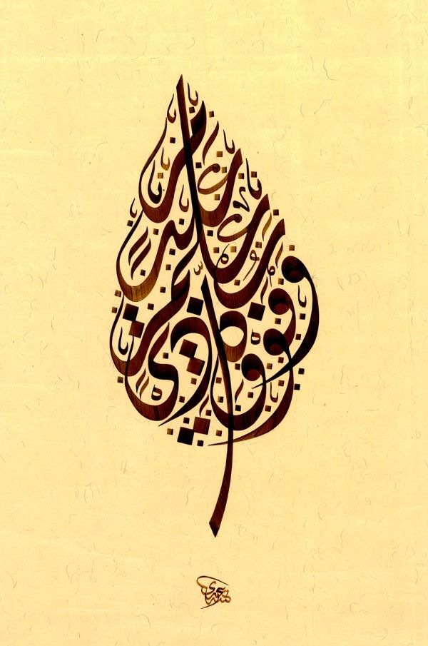

Ebru
Marbled paper or "Ebru" is an art form that was developed in Central Asia and Ottoman Empire in the fifteenth century. Traditionally, this paper was used for borders on Ottoman panels and miniatures, and for the inside covers and flyleaves of books. In the 17th century European travelers collected examples of these papers and thus the Ebru art was introduced to Europe, where it became very popular too.

CALLIGRAPHY
Marbled paper or "Ebru" is an art form that was developed in Central Asia and Ottoman Empire in the fifteenth century. Traditionally, this paper was used for borders on Ottoman panels and miniatures, and for the inside covers and flyleaves of books. In the 17th century European travelers collected examples of these papers and thus the Ebru art was introduced to Europe, where it became very popular too.
Islamic art encompasses the visual arts produced in the Islamic world.[1] Islamic art is difficult to characterize because it covers a wide range of lands, periods, and genres,[2] including Islamic architecture, Islamic calligraphy, Islamic miniature, Islamic glass, Islamic pottery, and textile arts such as carpets and embroidery. It comprises both religious and secular art forms. Religious art is represented by calligraphy, architecture and furnishings of religious buildings, such as mosque fittings (e.g., mosque lamps and Girih tiles), woodwork and carpets. Secular art also flourished in the Islamic world, although some of its elements were criticized by religious scholars.[3]
Early development of Islamic art was based on Islamic ideals, which were reflected in the art. For example, Minars were constructed to help the Muezzin in spreading the recitation of the Adhan. Islamic art was also represented differently from culture to culture and molded with local traditions.[4] Though the concept of "Islamic art" has been criticised by some modern art historians as an illusory Eurocentric construct,[5][6][7] the similarities between art produced at widely different times and places in the Islamic world, especially in the Islamic Golden Age, have been sufficient to keep the term in wide use by scholars.[8]
Calligraphic design is omnipresent in Islamic art, where, as in Europe in the Middle Ages, religious exhortations, including Qur'anic verses, may be included in secular objects, especially coins, tiles and metalwork, and most painted miniatures include some script, as do many buildings. Use of Islamic calligraphy in architecture extended significantly outside of Islamic territories; one notable example is the use of Chinese calligraphy of Arabic verses from the Qur'an in the Great Mosque of Xi'an.[15] Other inscriptions include verses of poetry, and inscriptions recording ownership or donation. Two of the main scripts involved are the symbolic kufic and naskh scripts, which can be found adorning and enhancing the visual appeal of the walls and domes of buildings, the sides of minbars, and metalwork.[9] Islamic calligraphy in the form of painting or sculptures are sometimes referred to as quranic art.[16]
East Persian pottery from the 9th to 11th centuries decorated only with highly stylised inscriptions, called "epigraphic ware", has been described as "probably the most refined and sensitive of all Persian pottery".[17] Large inscriptions made from tiles, sometimes with the letters raised in relief, or the background cut away, are found on the interiors and exteriors of many important buildings. Complex carved calligraphy also decorates buildings. For most of the Islamic period the majority of coins only showed lettering, which are often very elegant despite their small size and nature of production. The tughra or monogram of an Ottoman sultan was used extensively on official documents, with very elaborate decoration for important ones. Other single sheets of calligraphy, designed for albums, might contain short poems, Qur'anic verses, or other texts.
The main languages, all using Arabic script, are Arabic, always used for Qur'anic verses, Persian in the Persianate world, especially for poetry, and Turkish, with Urdu appearing in later centuries. Calligraphers usually had a higher status than other artists.